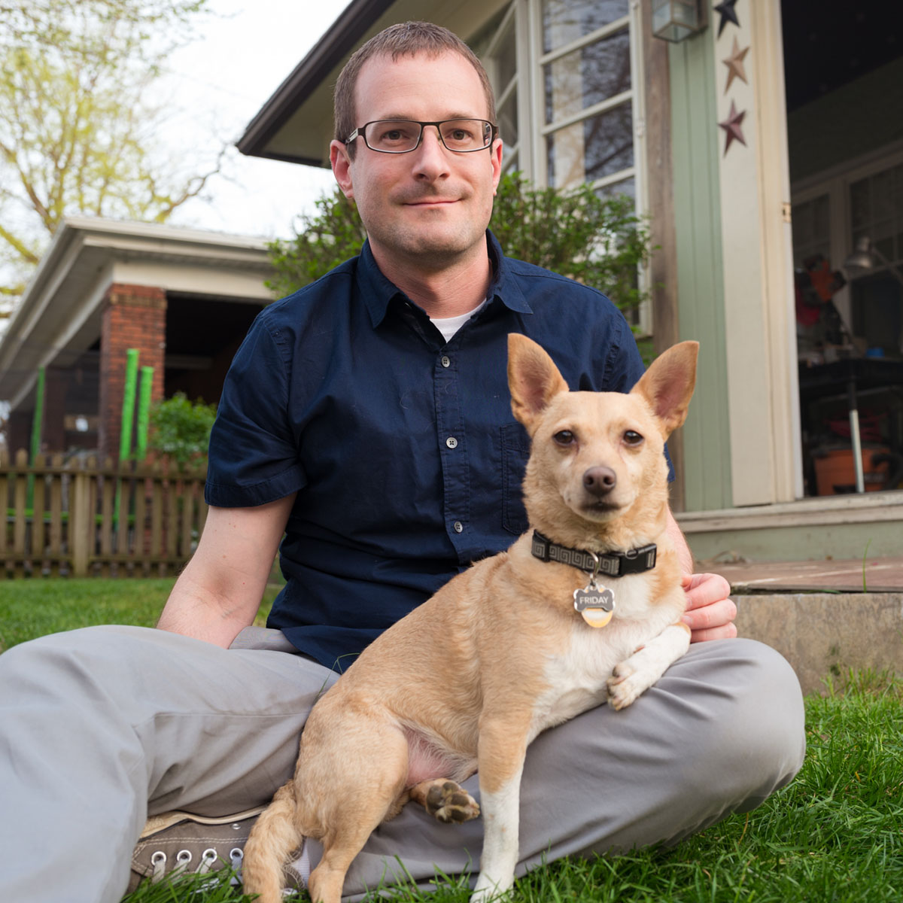

Matt Hannigan
I’m a nonprofit entrepreneur, grantmaker, and teacher. I specialize in small-scale, community-driven, creative projects.
Co-Founder of The Sprout Fund
I helped support thousands of people, projects, and ideas across Pittsburgh over 17 years.
Adjunct Faculty at Carnegie Mellon
I prepare a new generation of artistic and civic leaders to create results-oriented programs at Heinz College.
photo: me and my dog, Friday, at home in Squirrel Hill